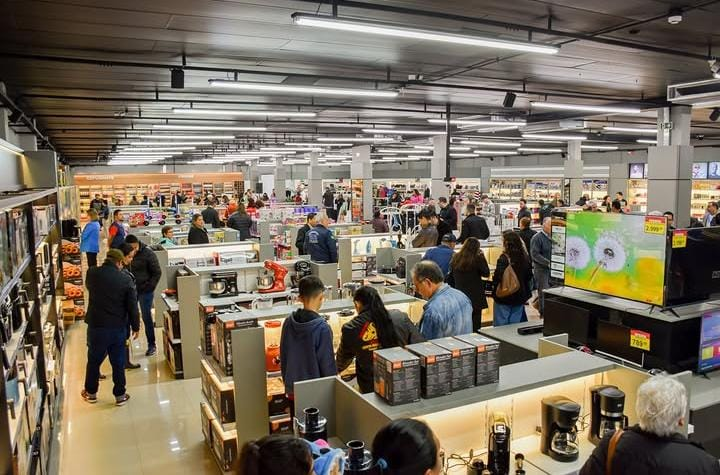
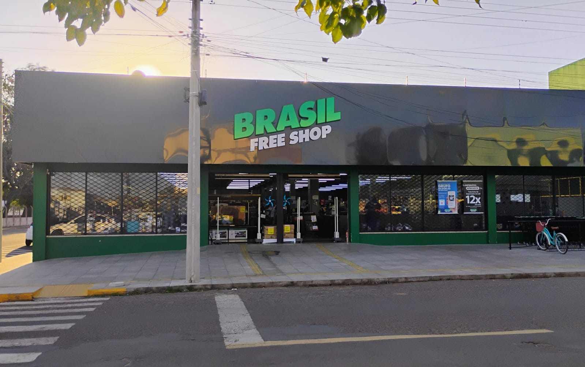
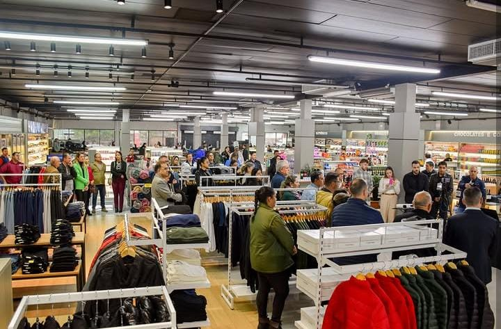

Brasil Free Shop


Inaugurado em 18/06/2025, o Brasil Free Shop, empreendimento do Grupo Baklizi, marca um passo importante para o desenvolvimento econômico e turístico do município. O empreendimento atua na cidade com cerca de 80 funcionários contratados, consolidando-se como um importante gerador de empregos e fortalecendo o comércio. Aceita reais, pesos e dólares. Várias opções a preço baixo, incluindo bebidas, chocolates, eletrônicos e vestuário.
Documento necessário: documento oficial com foto.
Limites mensais por pessoa: até US$500,00 isento de impostos e máximo de 12 litros de bebidas alcoólicas no total.
Instalados em cidades brasileiras gêmeas a municípios estrangeiros, os free shops de fronteira terrestre são permitidos por lei regulamentada em 2018. O regramento garante a isenção de alguns impostos embutidos nas mercadorias. Na prática, para os brasileiros significa comprar produtos de marcas estrangeiras sem as taxas de importação.
